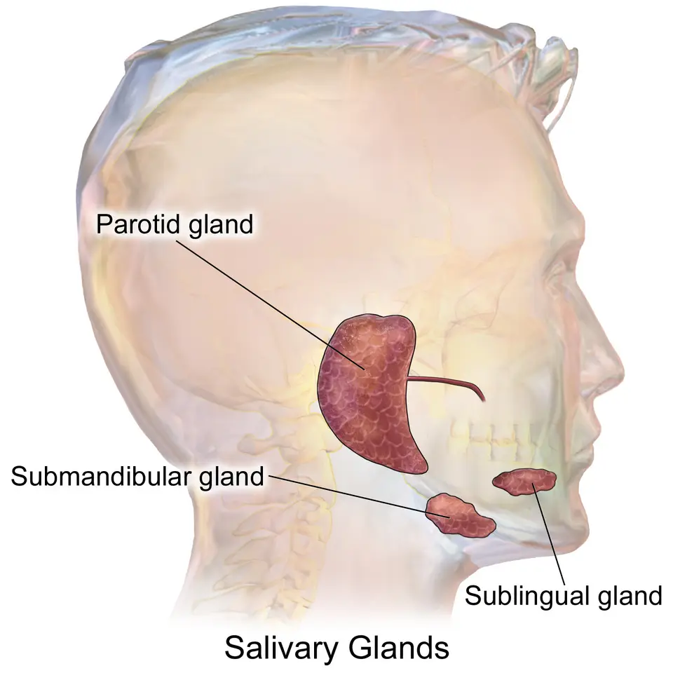

DX.2 — Xérostomie médicamenteuse
La xérostomie médicamenteuse ne menace pas la vie, mais elle détruit les dents, favorise la candidose et altère l’alimentation du sujet âgé polymédiqué S1S6. Le médecin la retient seulement après avoir cherché une maladie de Sjögren, une déshydratation, un diabète déséquilibré et une irradiation cervico-faciale S7. Une bouche sèche avec agitation, tachycardie et rétention urinaire signe au contraire une intoxication anticholinergique, qui relève de l’urgence AIPS 66978.
1. Définition
Le groupe de travail du World Workshop on Oral Medicine VI définit la xérostomie comme la sensation subjective de bouche sèche, en 2017 S1. Le même groupe appelle hypofonction salivaire la baisse objectivement mesurée de la salivation, et dysfonction salivaire médicamenteuse l’hypofonction ou la sialorrhée objective causées par un médicament S1. La xérostomie médicamenteuse désigne donc la sensation de bouche sèche attribuée à un médicament, avec ou sans hypofonction salivaire mesurée S1.
2. Épidémiologie (Suisse, puis Europe)
Une méta-analyse coordonnée à Zurich montre une prévalence de la xérostomie de 21 % après 50 ans, sur 37 études et plus de 1,6 million de participants S3. La même analyse trouve une hypofonction salivaire au repos chez 12 % des sujets, ce qui confirme que sensation et débit mesuré ne se recouvrent pas S3.
Une cohorte genevoise de 116 adultes, âgés en moyenne de 50 ans, rapporte une xérostomie chez 14,7 % et une hyposialie au repos chez 21,6 % des participants S4. L’hyposialie au repos y croît avec l’âge, le nombre de médicaments et la perte dentaire ; l’âge reste toutefois le seul facteur indépendant S4.
En Suède, une enquête postale menée auprès de 3313 adultes de 20 à 80 ans montre une bouche sèche chez 21,3 % des hommes et 27,3 % des femmes S2. La plainte touche 32,1 % des personnes traitées contre 16,9 % des personnes sans traitement ; cette différence décrit une association, car l’étude ne sépare pas la maladie du médicament S2. La probabilité de bouche sèche augmente avec l’âge, le sexe féminin et le nombre de médicaments pris S2. Le tableau suivant situe ces chiffres dans leur population et leur mesure.
Population et mesure des chiffres
| Chiffre | Population et mesure | Source |
|---|---|---|
| Xérostomie 21 % | Adultes de 50 ans et plus, échantillons représentatifs, méta-analyse 2026 | S3 |
| Hyposialie au repos 12 % | Même méta-analyse, débit de salive totale non stimulée | S3 |
| Xérostomie 14,7 % ; hyposialie au repos 21,6 % | Cohorte clinique de Genève, 116 adultes, 2026 | S4 |
| Bouche sèche 32,1 % contre 16,9 % | Adultes suédois traités ou non, association sans causalité établie, 1997 | S2 |
| Un ou deux symptômes 31 % ; trois à cinq symptômes 20 % | Hommes britanniques de 71 à 92 ans, questionnaire postal, 2010 à 2012 | S13 |
| Charge anticholinergique de 3 ou plus chez 32 % | Patients de 84 ans en moyenne, hospitalisés en phase aiguë à Oslo | S12 |
Les rangs de la liste reposent sur des mesures hétérogènes : la xérostomie est une prévalence ponctuelle, alors que d’autres diagnostics du LOT sont des incidences S3.
Le CBIP situe la xérostomie entre 10 et 40 % chez les personnes âgées, car elles prennent plusieurs médicaments et tolèrent moins bien leurs effets indésirables S7. À Oslo, chez 256 patients âgés hospitalisés, toute charge anticholinergique est associée à une sécheresse plus sévère S12. Le rapport de cotes atteint déjà 2,06 pour une charge de 1 à 2 S12. L’enjeu de santé publique tient donc à la polymédication du grand âge, qui cumule carie, candidose et dénutrition S6S7.
L’histoire naturelle suit l’exposition : la sécheresse augmente avec le nombre et la dose des médicaments, et elle régresse quand le médicament causal peut être réduit ou remplacé S1S7.
3. Physiopathologie
La base anatomo-fonctionnelle explique pourquoi un médicament assèche la bouche : la sécrétion salivaire dépend surtout de la commande parasympathique sur des récepteurs muscariniques S1. Le tableau de corrélation relie ensuite chaque perturbation à l’examen qui la montre et au geste qui la corrige.
Base à connaître : glandes salivaires et commande nerveuse
L’homme a trois paires de glandes salivaires principales et environ un millier de glandes accessoires réparties dans la bouche et l’oropharynx S8. La salive de la parotide est surtout séreuse, celle de la sous-mandibulaire est séromuqueuse et celle de la sublinguale est surtout muqueuse S8.
Les trois paires de glandes salivaires majeures. Le schéma de profil montre la parotide, la glande sous-mandibulaire et la glande sublinguale, en couleur, sur une tête translucide S8.

Lisez d'abord seul ce cliché (les trois paires de glandes salivaires majeures) : cherchez vous-même le signe.
La copie annotée (les trois paires de glandes salivaires majeures) numérote les repères qui sont décrits ci-dessous.
- 1. La parotide occupe la loge en avant de l’oreille et fournit une salive à prédominance séreuse S8.
- 2. Le canal de Sténon traverse la joue, puis il s’ouvre à la face interne de celle-ci S8.
- 3. La glande sous-mandibulaire siège sous la mandibule, et elle sécrète une salive séromuqueuse par le canal de Wharton S8.
- 4. La glande sublinguale repose sous le plancher buccal et produit une salive à prédominance muqueuse S8.
- Le schéma omet les glandes salivaires accessoires, qui sont environ un millier dans la cavité buccale et l’oropharynx S8.
Ce que l'image décide. Le médecin palpe les trois loges des deux côtés, car une tuméfaction glandulaire oriente vers une autre cause que le médicament S9.

Le débit total non stimulé atteint environ 0,4 mL/min et il est multiplié par dix après stimulation S8. La production quotidienne varie de 800 à 1500 mL, et la salive contient 99 % d’eau S8.
Les cellules sécrétoires portent des récepteurs muscariniques M1 et M3, des récepteurs adrénergiques α1 et β1 et des récepteurs peptidergiques, qui déclenchent la sécrétion S1. Un antimuscarinique empêche donc l’acétylcholine parasympathique d’activer la cellule acineuse, ce qui rend la salive rare dès les premières prises S1.
La salive humidifie la muqueuse, lubrifie le bol, dissout les saveurs, tamponne les acides et reminéralise l’émail grâce à sa sursaturation en minéraux dentaires S1. Elle module aussi la flore buccale par ses composants antibactériens, antiviraux et antifongiques, ce qui explique la candidose quand elle manque S1.
La sécrétion salivaire atteint son minimum pendant la nuit ; une dose vespérale d’un médicament asséchant aggrave donc la sécheresse nocturne et la carie S7.
Une substance agit soit au niveau du système nerveux central, soit à la jonction neuroglandulaire, ce qui explique que des classes très variées assèchent la bouche S1. Les antimuscariniques bloquent l’effet de l’acétylcholine sur la cellule acineuse, alors que d’autres molécules, comme l’alendronate, réduisent le débit par un mécanisme moins évident S1.
L’effet dépend de la dose, et l’association de plusieurs molécules faiblement asséchantes peut produire une sécheresse que chacune ne provoque pas isolément S1. Ce cumul se mesure par la charge anticholinergique, dont chaque niveau aggrave la sécheresse chez le sujet âgé S12.
Charge anticholinergique et sécheresse
L’équipe d’Oslo a calculé la charge anticholinergique avant l’admission chez 256 patients âgés de 84 ans en moyenne, dont 70 % de femmes S12. Elle a trouvé une charge nulle chez 18 %, de 1 à 2 chez 50 % et de 3 ou plus chez 32 % des patients S12.
Les rapports de cotes de sécheresse plus sévère atteignaient 2,06 pour une charge de 1 à 2 et 2,25 pour une charge de 3 ou plus S12. Une charge faible suffit donc à assécher la bouche, ce qui justifie de compter chaque molécule et pas seulement la plus puissante S12.
Les femmes présentaient une charge et une sécheresse plus élevées que les hommes, ce qui rejoint la prédominance féminine observée en population générale S2S12.
La baisse du débit retire la protection mécanique, tampon et antimicrobienne de la salive ; il en résulte des caries, une dysgueusie, une muqueuse douloureuse et une candidose S1. La mastication, la déglutition, la parole et la tenue des prothèses se dégradent ensuite, puis l’alimentation s’appauvrit S6.
Du mécanisme au signe et au traitement
| Perturbation | Exploration qui la montre | Geste qui la corrige |
|---|---|---|
| Le blocage muscarinique réduit la sécrétion acineuse S1. | La sialométrie non stimulée mesure un débit abaissé S9. | Le prescripteur réduit, fractionne ou remplace la molécule S7. |
| Le cumul de molécules alourdit la charge anticholinergique S12. | La revue de la liste complète calcule la charge S12. | Le médecin retire d’abord les molécules les plus asséchantes S1S7. |
| La perte du pouvoir tampon déminéralise l’émail S1. | L’examen dentaire repère les caries S8. | Le dentifrice à forte teneur en fluor protège la dent AIPS 56696. |
| La baisse antifongique favorise Candida S1. | L’inspection montre un érythème ou des dépôts S8. | Le médecin traite la candidose selon le DX.3 du LOT. |
| Le défaut de lubrification gêne la déglutition S6. | L’anamnèse alimentaire détecte l’évitement des aliments secs S6. | La gorgée de liquide avec chaque bouchée facilite le passage S6. |
4. Démarche diagnostique
Les deux urgences du LOT sont l’abcès périamygdalien et le carcinome épidermoïde (voir la Phase A). Elles donnent une douleur, une masse ou un ulcère qui ne guérit pas, et non une bouche sèche isolée. Devant une sécheresse, le danger immédiat vient de l’intoxication anticholinergique et de la déshydratation, qu’il faut écarter avant toute autre hypothèse AIPS 66978S6.
Le médecin écarte ensuite quatre causes fréquentes qui imitent l’effet médicamenteux, chacune par un élément qui tranche S7. Le piège commun consiste à imputer au médicament une sécheresse que la maladie sous-jacente explique mieux S2. L’erreur inverse consiste à attribuer à l’âge une sécheresse que la liste des médicaments explique S4S12.
Diagnostics à écarter devant une bouche sèche
| Diagnostic | Élément qui tranche | Piège | Conduite si positif |
|---|---|---|---|
| Intoxication anticholinergique | La sécheresse s’accompagne d’agitation, d’hallucinations, de mydriase, de tachycardie et de rétention urinaire AIPS 66978. | Le soignant attribue l’agitation du sujet âgé à une démence. | Le médecin applique la conduite d’urgence du point 11. |
| Déshydratation | Une osmolalité plasmatique supérieure à 300 mOsm/kg signe la déshydratation S6. | La bouche sèche masque une soif que le patient âgé n’exprime pas. | Le médecin réhydrate par voie orale, sous-cutanée ou intraveineuse selon la gravité S6. |
| Maladie de Sjögren | Les yeux secs, le test de Schirmer abaissé et les anticorps anti-SSA orientent S9. | Un antimuscarinique fausse les tests de sécheresse s’il n’est pas suspendu S10. | Le médecin suit la démarche du DX.7 du LOT. |
| Diabète de type 2 mal contrôlé | La polyurie, la soif et la glycémie élevée orientent S7. | Le médecin accuse le traitement antidiabétique au lieu du déséquilibre. | Le médecin équilibre la glycémie, puis réévalue la sécheresse. |
| Irradiation cervico-faciale | L’anamnèse retrouve une radiothérapie de la tête ou du cou S7. | Le patient oublie de mentionner un traitement ancien. | La sécheresse post-radique relève d’une prise en charge propre S8. |
La sécheresse post-radique se distingue par son contexte et sa sévérité, ce qui évite de l’attribuer à un médicament S8.
Le CBIP cite aussi, plus rarement, l’anxiété, la dépression, le sida et la réaction du greffon contre l’hôte S7.
Sécheresse après radiothérapie cervico-faciale
Les glandes salivaires sont très radiosensibles : dès la première semaine, après environ 15 Gy, le débit salivaire total baisse de 90 % S8. La glande paraît encore normale en histologie à ce stade, et une récupération reste possible si l’irradiation s’arrête S8.
Si le traitement se poursuit, les acini se détruisent progressivement, avec inflammation et fibrose interstitielle S8. Trois ans après la radiothérapie, 64 % des survivants présentent une xérostomie modérée à sévère S8.
Cette sécheresse relève de l’indication de la pilocarpine en Suisse, contrairement à la sécheresse médicamenteuse AIPS 55901.
Erreur classique du débutant
Situation. Une femme âgée prend de l’oxybutynine pour une vessie hyperactive, de l’amitriptyline pour des douleurs neuropathiques et du furosémide ; elle se plaint de bouche sèche AIPS 70200AIPS 66978S1.
Erreur. L’interne prescrit un substitut salivaire et s’arrête là, car il attribue la plainte à l’âge S4.
Raisonnement juste. Les trois molécules figurent parmi les substances à preuve élevée d’effet salivaire, et leurs effets s’additionnent S1. À Oslo, une charge anticholinergique de 3 ou plus multipliait par 2,25 les chances d’une sécheresse plus sévère S12.
Étapes. Le médecin vérifie d’abord l’absence d’agitation, de mydriase et de globe vésical, puis il mesure l’hydratation AIPS 66978S6. Il discute ensuite avec les prescripteurs la molécule la moins indispensable, et il protège les dents pendant ce temps S1AIPS 56696.
Leçon. L’âge reste un facteur indépendant d’hyposialie, mais il n’excuse jamais une charge médicamenteuse évitable S4S12.
5. Anamnèse ciblée et drapeaux rouges
L’anamnèse commence par caractériser la sécheresse, car une plainte typique oriente vers une cause salivaire et une plainte atypique vers une autre piste S4S8. Elle reconstruit ensuite la liste complète des médicaments, avec leurs dates de début et leurs doses, car la chronologie fonde l’imputabilité S1S7.
Caractériser la sécheresse buccale
| Élément | Question | Réponse typique et raison |
|---|---|---|
| Siège | Où ressentez-vous la sécheresse ? | La bouche entière s’assèche, car le médicament agit sur toutes les glandes S1. |
| Horaire | Est-elle pire la nuit ou au réveil ? | Elle s’aggrave la nuit, quand la sécrétion atteint son minimum S7. |
| Début | Quand a-t-elle commencé ? | Elle suit l’introduction ou l’augmentation d’un médicament S7. |
| Intensité | Buvez-vous pour avaler les aliments secs ? | Le besoin de boire pour avaler traduit une gêne importante S3. |
| Facteurs aggravants | Le café, l’alcool ou les bains de bouche alcoolisés l’aggravent-ils ? | Ces produits aggravent la sécheresse ou irritent la muqueuse S6S7. |
| Signes associés | Avez-vous des caries nouvelles, des brûlures ou un goût altéré ? | Ces signes traduisent la perte des fonctions protectrices de la salive S1. |
| Atypie | Avez-vous les yeux secs, une glande gonflée ou une soif intense ? | Ces signes orientent vers Sjögren, une masse ou un diabète S7S9. |
La plainte reste subjective, car l’hyposialie au repos prédit la xérostomie sans la résumer ; certains patients secs ne se plaignent pas, et inversement S4S12.
Médicaments à rechercher
Les médicaments anticholinergiques constituent la principale cause d’hyposialie ; le CBIP cite ceux de la vessie, de la maladie de Parkinson, de l’asthme et de la BPCO, y compris inhalés S7. La plupart des antidépresseurs, la prométhazine, la diphenhydramine, les phénothiazines, l’atropine, la butylscopolamine, le disopyramide et la carbamazépine figurent dans la même liste S7.
Le CBIP ajoute les alpha-bloquants, les antitumoraux, les benzodiazépines, la clonidine, les diurétiques, la méthyldopa, les morphiniques, les inhibiteurs de la pompe à protons et la tizanidine S7. La revue systématique du WWOM retient 56 substances à preuve élevée et 50 à preuve modérée, réparties dans 9 des 14 groupes de la classification ATC S1.
L’information professionnelle suisse de Saroten® indique que la sécheresse buccale est un effet très fréquent de l’amitriptyline AIPS 66978. Celle de l’oxybutynine en fait l’effet indésirable le plus fréquemment rapporté, ce qui illustre le risque des antimuscariniques vésicaux AIPS 70200.
Le tableau suivant montre, par classe, des substances que la revue du WWOM classe parmi les preuves élevées d’effet salivaire S1.
| Classe | Exemples à preuve élevée | Action pharmacologique retenue |
|---|---|---|
| Antimuscariniques vésicaux | Oxybutynine, solifénacine, toltérodine | Ils bloquent le récepteur muscarinique S1. |
| Bronchodilatateur inhalé | Tiotropium | Il bloque le récepteur muscarinique bronchique S1. |
| Antidépresseurs | Amitriptyline, nortriptyline, citalopram, escitalopram, fluoxétine, bupropion, réboxétine | Ils inhibent la recapture des monoamines, et certains sont antimuscariniques S1. |
| Antipsychotiques | Chlorpromazine, clozapine, olanzapine, quétiapine, rispéridone, aripiprazole | Ils antagonisent la dopamine et plusieurs autres récepteurs S1. |
| Hypnotiques et myorelaxants | Zolpidem, doxylamine, baclofène, cyclobenzaprine | Ils agissent sur le système GABA ou sur le récepteur H1 S1. |
| Cardiovasculaires | Furosémide, bendrofluméthiazide, vérapamil, timolol | Ils agissent sur le rein, le canal calcique ou le récepteur bêta S1. |
| Autres | Gabapentine, lithium, méthylphénidate, rotigotine, alendronate | Leur mécanisme salivaire reste moins direct S1. |
Le médecin interroge aussi sur l’automédication et la combinaison de molécules, car l’interaction de deux médicaments peut assécher la bouche sans que chacun le fasse seul S1.
Elle recherche enfin les comorbidités qui assèchent la bouche, une radiothérapie ancienne et le tabac, qui aggrave la xérostomie S6S7. Chaque drapeau rouge impose une action qui ne relève plus de la simple revue médicamenteuse.
Drapeaux rouges devant une bouche sèche
| Drapeau rouge | Signification | Action immédiate |
|---|---|---|
| Agitation, hallucinations, mydriase, tachycardie, rétention urinaire | Le tableau évoque une intoxication anticholinergique AIPS 66978. | Le médecin adresse le patient aux urgences et arrête la molécule. |
| Soif, confusion, apports oraux insuffisants | Le tableau évoque une déshydratation S6. | Le médecin mesure l’osmolalité et réhydrate S6. |
| Tuméfaction salivaire nouvelle et persistante | Une maladie lymphoproliférative peut compliquer un Sjögren S9. | Le médecin demande une échographie et un avis spécialisé (DX.7). |
| Ulcère ou masse buccale qui ne guérit pas | Le tableau peut révéler un carcinome (DX.9 du LOT). | Le médecin adresse le patient pour biopsie sans attendre. |
| Dysphagie avec fausses routes | La sécheresse aggrave un trouble de déglutition S6. | Le médecin évite les gommes et adapte les textures. |
6. Examen physique ciblé, région par région
L’examen évalue l’état d’hydratation, puis il parcourt la bouche dans l’ordre de l’inspection : lèvres, muqueuses, langue, plancher buccal, dents, prothèses et glandes S8S11. Chaque région a sa fenêtre : état général, muqueuses et langue, plancher buccal, dents et prothèses et glandes et ganglions.
Région 1 : état général et hydratation
Le médecin recherche d’abord des signes de déshydratation et de toxicité anticholinergique, car ils changent la conduite S6AIPS 66978. Il note le pouls, la taille des pupilles, l’état de conscience et la diurèse, puis il palpe la vessie si le patient urine mal AIPS 66978.
Le piège consiste à juger l’hydratation sur la seule bouche, que le médicament assèche même chez un patient bien hydraté S1S6.
Région 2 : muqueuses et langue
Une muqueuse normale est brillante sous un film salivaire continu ; une muqueuse sèche est mate et colle à l’abaisse-langue S8. La langue peut perdre son aspect humide et se fissurer, ce que le score clinique de sécheresse buccale cote parmi ses signes S11.
Le score clinique de sécheresse buccale est la somme de 10 signes cotés chacun 1 point, de 0 à 10 S11. Il vaut 6,0 en moyenne chez les patients secs contre 1,0 chez les témoins, et il varie à l’inverse du débit salivaire S11.
Un seuil de 6 ou plus est le critère de sécheresse clinique dans l’étude d’Oslo chez le sujet âgé hospitalisé S12. Des plaques blanches détachables ou un érythème sous la prothèse orientent vers une candidose surajoutée S6S8.
Région 3 : plancher buccal
Le médecin regarde la flaque de salive du plancher buccal et l’écoulement aux orifices des canaux de Wharton, en avant du frein de la langue S8. Une salive épaisse, filante ou mousseuse traduit un débit faible, ce que la sialométrie confirmera S8S9.
Le piège consiste à conclure sur une seule observation, car l’hydratation et l’heure de la journée modifient la sécrétion S8.
Région 4 : dents et prothèses
Le médecin cherche des caries récentes, une parodontose et un déchaussement, qui signent une sécheresse ancienne S8. Les caries et l’érosion progressent vite, car la salive ne répare plus les lésions débutantes de l’émail S6.
La prothèse amovible tient mal sans film salivaire, et sa face interne peut cacher une stomatite candidosique S6S7.
Région 5 : glandes salivaires et ganglions
Les parotides, les glandes sous-mandibulaires et les aires ganglionnaires cervicales sont palpées des deux côtés S9. Les glandes restent souples et de volume normal dans la forme médicamenteuse pure S1.
Une tuméfaction glandulaire ferme ou un ganglion fixe sortent du cadre médicamenteux et imposent le bilan du DX.7 ou du DX.9 S9.
Aucun signe physique ne prouve l’origine médicamenteuse ; l’examen mesure le retentissement et cherche les signes d’une autre cause S1S8.
7. Approche syndromique
7.1 Syndrome d’hypofonction salivaire
Les signes fonctionnels associent bouche sèche, besoin de boire pour avaler, brûlures et goût altéré ; les signes physiques associent muqueuse mate, salive rare et caries nouvelles S1S6. Le mécanisme commun reste la baisse de sécrétion des acini, que le débit non stimulé objective S9.
7.2 Syndrome des complications buccales
Les signes fonctionnels comprennent la douleur muqueuse, la gêne à mâcher et la prothèse instable ; les signes physiques comprennent la candidose, la carie du collet et l’érosion S1S6.
7.3 Syndrome anticholinergique
Les signes associent sécheresse des muqueuses, mydriase, tachycardie, rétention urinaire, baisse de la motilité intestinale, agitation et hallucinations AIPS 66978. Leur réunion signe une toxicité anticholinergique, qui dépasse la gêne buccale et relève de l’urgence AIPS 66978.
Toxicité anticholinergique
L’information professionnelle de l’amitriptyline décrit, dans les premières heures d’un surdosage, une somnolence ou une excitation, une agitation, des hallucinations, une mydriase et une tachycardie AIPS 66978. Elle mentionne aussi une rétention urinaire, une sécheresse des muqueuses, une baisse de la motilité intestinale, des crampes et de la fièvre AIPS 66978.
| Signe | Geste de recherche | Mécanisme |
|---|---|---|
| Mydriase | Le médecin éclaire chaque pupille. | Le blocage muscarinique paralyse le sphincter de l’iris. |
| Tachycardie | Le médecin compte le pouls. | Le blocage vagal libère le nœud sinusal. |
| Rétention urinaire | Le médecin palpe ou percute la vessie. | Le détrusor perd sa commande parasympathique. |
| Syndrome | Signes fonctionnels | Signes physiques |
|---|---|---|
| 7.1 Hypofonction salivaire | Bouche sèche, besoin de boire, dysgueusie | Muqueuse mate, salive rare |
| 7.2 Complications buccales | Brûlures, gêne à mâcher | Candidose, caries, érosion |
| 7.3 Toxicité anticholinergique | Agitation, confusion | Mydriase, tachycardie, globe vésical |
8. Diagnostic positif et critères
Aucune société savante ne publie de critères formels de la xérostomie médicamenteuse ; le diagnostic repose sur un faisceau d’imputabilité S1. Ce faisceau réunit une sécheresse confirmée, un médicament asséchant connu, une chronologie compatible et l’absence d’autre cause S1S7.
Faisceau d’imputabilité
| Élément | Ce qui suffit | Ce qui ne suffit pas |
|---|---|---|
| Sécheresse | Une plainte quotidienne et un débit non stimulé d’au plus 0,1 mL/min S9S12. | Une plainte isolée ne prouve pas l’hyposialie S4. |
| Médicament | La molécule figure parmi les substances à preuve élevée ou dans l’AIPS S1AIPS 70200. | Un médicament sans effet salivaire connu n’explique rien seul S1. |
| Chronologie | La sécheresse suit l’introduction ou la hausse de dose S7. | Une sécheresse antérieure au traitement oriente ailleurs. |
| Autres causes | Le bilan du point 9 écarte Sjögren, diabète et irradiation S7. | Un traitement asséchant n’exclut pas une maladie associée S2. |
| Évolution | La sécheresse régresse après réduction ou substitution S7. | Un arrêt brutal d’un psychotrope pour tester la cause n’est pas justifié. |
La Revue Médicale Suisse décrit une échelle de gravité qui associe la gêne alimentaire et le débit non stimulé ; sa validité n’a pas encore été démontrée S8.
Échelle de gravité de la xérostomie
Cette échelle a été décrite pour la xérostomie post-radique, mais elle illustre comment la gêne alimentaire suit la baisse du débit S8.
| Degré | Critères |
|---|---|
| 0 | Le patient n’a aucun symptôme S8. |
| 1 | La salive est épaisse ou la bouche sèche, sans altération significative de la nutrition, avec un débit non stimulé d’au moins 0,2 mL/min S8. |
| 2 | La nutrition orale diminue nettement, avec boissons excessives, lubrifiants ou régime lisse, et un débit entre 0,1 et 0,2 mL/min S8. |
| 3 | Les symptômes empêchent une alimentation orale suffisante et imposent hydratation intraveineuse ou sonde, avec un débit d’au plus 0,1 mL/min S8. |
Les mesures objectives ne correspondent pas toujours aux symptômes rapportés, ce qui justifie d’associer un questionnaire à la sialométrie S8.
Le score clinique de sécheresse buccale et la sialométrie mesurent la gravité, mais ils ne disent rien de la cause S11S9. Le médecin ne pose donc pas ce diagnostic sur la seule présence d’un médicament asséchant dans la liste S2.
9. Examens complémentaires
9.a Gold standard
La sialométrie non stimulée reste la mesure de référence de l’hyposialie, mais le diagnostic d’origine médicamenteuse demeure clinique S5S9.
Sialométrie non stimulée
Indication. Le médecin la demande quand la plainte persiste, quand une maladie de Sjögren est possible ou pour suivre l’effet d’une adaptation thérapeutique S9.
Technique. Le patient crache sa salive dans un récipient gradué pesé, ou garde des tampons pesés en bouche pendant 5 à 15 minutes sans avaler S9.
La méthode des trois tampons pesés consiste à placer deux cotons en regard des canaux de Sténon et un au plancher buccal pendant cinq minutes S8. Un gain de poids supérieur à 2 g est normal S8.
| Résultat | Signification | Conduite |
|---|---|---|
| Débit total au repos voisin de 0,4 mL/min | Le débit reste dans la valeur physiologique moyenne S8. | Le médecin cherche une cause sensorielle ou psychique de la plainte. |
| Débit d’au plus 0,1 mL/min | Le débit signe une hyposialie au repos S9S4. | Le médecin poursuit l’enquête étiologique et protège les dents. |
| Débit stimulé inférieur à 0,7 mL/min | La réserve glandulaire diminue S4. | Un sialogogue a moins de chances d’agir S1. |
Pièges. L’hydratation et l’heure de la journée modifient le débit, et les valeurs mesurées ne correspondent pas toujours aux symptômes S8. Aucune méthode de recueil n’est standardisée, ce qui impose de répéter la même technique au même horaire S9.
9.b Première intention
Le bilan de première intention du médecin de famille comprend l’examen clinique coté, la revue des médicaments et une glycémie S7S11. Le test du morceau de sucre, validé à Genève, permet d’estimer la salive au repos en quelques minutes S5.
Test du morceau de sucre
Technique. Le patient place sous la langue un morceau de sucre standard n° 4 de 5,6 g, et l’examinateur chronomètre sa désagrégation S5.
Interprétation. Un temps de 140 s ou plus indique une hyposialie, avec une sensibilité de 0,64 et une spécificité de 0,91 par rapport au débit non stimulé S5.
Pièges. Le test ne remplace pas la sialométrie quand le résultat change la conduite, car sa sensibilité reste modeste S5. Les participants ont jugé ce test plus confortable que le recueil de salive classique S5.
9.c Alternatives
Chez le patient âgé, fragile ou hospitalisé, le recueil de salive échoue souvent ; à Oslo, le débit non stimulé manquait chez 90 patients sur 382 examinés S12. Le score clinique de sécheresse buccale et les questionnaires prennent alors le relais S12S11.
L’équipe d’Oslo combine quatre indicateurs dans un score composite de gravité, faisable au lit du patient âgé S12.
Score composite de gravité de la bouche sèche
Composition. Chaque indicateur vaut un point au-delà de son seuil, ce qui donne un score de 0 à 4 S12.
| Indicateur | Seuil d’un point |
|---|---|
| Question générale de xérostomie | Une réponse d’au moins 3 compte un point S12. |
| Inventaire de xérostomie résumé | Un total d’au moins 11 compte un point S12. |
| Score clinique de sécheresse buccale | Un score d’au moins 6 compte un point S12. |
| Débit de salive non stimulée | Un débit d’au plus 0,1 mL/min compte un point S12. |
Interprétation. Chez les patients âgés hospitalisés, les scores de 0, 1, 2 et 3 ou plus concernaient 29 %, 36 %, 23 % et 12 % des patients S12.
Piège. Le débit stimulé n’a pas été recueilli, car il paraissait irréalisable chez des patients fragiles en soins aigus S12.
9.d Deuxième intention
Le bilan de Sjögren se discute quand les yeux sont secs ou que des signes systémiques existent ; il n’a pas sa place devant une sécheresse isolée et expliquée S9S7.
Bilan orientant vers une maladie de Sjögren
Indication. Le médecin le prescrit si la sécheresse touche aussi les yeux, si une glande gonfle ou si la sécheresse persiste après adaptation du traitement S9.
Prescription. Le bilan comprend un test de Schirmer, les anticorps antinucléaires, les anticorps anti-SSA et anti-SSB et le facteur rhumatoïde S9.
Interprétation. Un test de Schirmer inférieur à 5 mm en 5 minutes est pathologique ; un tiers des malades de Sjögren n’ont toutefois aucun anticorps S9.
Piège. Un antimuscarinique fausse le Schirmer et le débit salivaire ; les critères demandent de répéter les tests après un intervalle suffisant sans ce médicament S10.
10. Arbre décisionnel
- Si la bouche sèche s’accompagne d’agitation, de mydriase, de tachycardie ou de rétention urinaire, le médecin suspecte une toxicité anticholinergique et adresse le patient aux urgences (point 11) AIPS 66978.
- Si le patient boit peu, paraît confus ou a soif, le médecin recherche une déshydratation et la corrige d’abord S6.
- Si une masse, un ulcère persistant ou une tuméfaction glandulaire existe, le médecin suit le DX.7 ou le DX.9 au lieu de cet arbre S9.
- Si les yeux sont secs, le médecin demande le bilan de Sjögren décrit au point 9.d S9.
- Si ce patient prend un antimuscarinique, le médecin répète les tests de sécheresse après un intervalle sans ce médicament S10.
- Si un médicament asséchant précède la plainte, le médecin révise la liste avec le prescripteur et le pharmacien S1S7.
- Si une substitution existe, le médecin remplace la molécule ; sinon il réduit la dose ou supprime la prise du soir S7.
- Si la sécheresse persiste malgré tout, le médecin protège les dents et soulage la bouche selon le point 11 S7AIPS 56696.
- Si la sécheresse persiste après adaptation, le médecin mesure le débit salivaire et reprend l’enquête étiologique S9.
11. Prise en charge selon les recommandations suisses
11.A But
Le traitement vise un débit non stimulé supérieur à 0,1 mL/min quand la réduction du médicament le permet, et l’absence de carie nouvelle au contrôle dentaire S9S1. Il vise aussi une alimentation suffisante et une hydratation conservée S6.
11.B Moyens
La conduite suit un ordre fixe : écarter l’urgence, réviser les médicaments, soulager la bouche, puis protéger les dents ; la conduite d’urgence précise le premier temps S7AIPS 66978.
Urgence — conduite chronologique
Minute 0. Le médecin reconnaît le tableau d’agitation, de mydriase, de tachycardie et de rétention urinaire chez un patient sous molécule anticholinergique AIPS 66978.
Minutes 0 à 15. Il arrête toute molécule anticholinergique, organise le transport vers les urgences et transmet la liste complète des traitements AIPS 66978S1.
Première heure. L’équipe des urgences enregistre un ECG, car un allongement du complexe QRS traduit la cardiotoxicité d’un antidépresseur tricyclique AIPS 66978. Après une forte dose d’un tricyclique à libération non retardée, l’AIPS préfère le charbon activé au lavage gastrique dans les premières heures, car le risque convulsif est élevé AIPS 66978.
Si le QRS dépasse 100 ms. Chez l’adulte avec hypotension ou arythmie ventriculaire, l’AIPS indique le bicarbonate de sodium à 1 mmol/kg en bolus ou en perfusion brève de 5 min AIPS 66978.
De 24 à 72 heures. L’équipe surveille la conscience et la respiration, car une dépression brutale du système nerveux central peut survenir secondairement AIPS 66978.
Heures suivantes. Le médecin corrige une déshydratation associée par voie orale si elle reste asymptomatique, sinon par voie sous-cutanée ou intraveineuse S6.
Prévoir. La prescription de sortie supprime la molécule en cause ou réduit sa dose, et le médecin informe le prescripteur par écrit S1.
La revue médicamenteuse constitue le traitement causal : le médecin arrête la molécule si possible, ou il passe à une molécule moins asséchante S7. L’ESPEN en gériatrie recommande aussi de réduire ou remplacer les médicaments qui assèchent la bouche chez le sujet dénutri ou à risque de dénutrition S6.
Revue médicamenteuse
Le médecin dresse d’abord la liste complète, automédication comprise, puis il calcule la charge anticholinergique de chaque molécule S12. Il discute ensuite chaque substitution avec le prescripteur, car la sécheresse ne justifie jamais l’arrêt brutal d’un traitement indispensable S1.
Si l’arrêt reste impossible, il répartit la dose quotidienne en plusieurs prises et évite la prise du soir, puisque la sécrétion salivaire baisse la nuit S7.
Le dentiste et le médecin prescripteur échangent directement quand un soin dentaire devient nécessaire, ce qui améliore le résultat pour le patient S1.
Les mesures locales soulagent sans corriger la cause : gorgées d’eau régulières, gommes sans sucre et substituts salivaires avant le coucher ou avant de parler longtemps S7. Aucune donnée ne permet de désigner un substitut salivaire de premier choix S7.
Mesures locales et alimentation
Le patient boit régulièrement de l’eau pendant la journée et accompagne chaque bouchée d’une gorgée de liquide, ce qui facilite la déglutition S7S6. Il évite l’alcool, le café, les plats très épicés et les bains de bouche alcoolisés, qui aggravent la sécheresse S7.
Les boissons acides et les fruits frais acides peuvent rendre la muqueuse douloureuse ; les aliments secs comme le pain, les biscuits et les biscottes deviennent difficiles à avaler S6. Les pastilles sans sucre, les bonbons modérément acides sans sucre et la gomme à mâcher peuvent stimuler la salivation S6.
Les substituts salivaires à base de carboxyméthylcellulose, d’hydroxyméthylcellulose ou de mucine soulagent pendant une courte durée S7. Le médecin encourage l’arrêt du tabac, qui aggrave la xérostomie S6.
Ces conseils alimentaires reposent sur l’expérience et le bon sens plus que sur des essais, ce que le groupe genevois souligne lui-même S6.
La protection dentaire repose sur le dentifrice fluoré à 5 mg/g, que l’AIPS réserve aux patients de plus de 16 ans à risque carieux fortement accru, dont la xérostomie prononcée AIPS 56696. La gelée fluorée hebdomadaire est un complément de la prévention de la carie AIPS 34916.
La pilocarpine orale n’est autorisée en Suisse que dans la xérostomie grave après radiothérapie ORL et dans la maladie de Sjögren ; sa place hors indication reste étroite AIPS 55901S1.
Pilocarpine et xérostomie médicamenteuse
L’AIPS de Salagen® limite les indications à la xérostomie grave après radiothérapie de tumeurs ORL et à la xérostomie de la maladie de Sjögren AIPS 55901. Le WWOM juge que les effets indésirables des sialogogues systémiques limitent leur emploi dans la sécheresse médicamenteuse S1.
Un sialogogue ne peut agir que sur des glandes qui gardent une fonction ; le médecin vérifie donc la réserve salivaire avant toute prescription S1. La pilocarpine peut aussi antagoniser les effets du médicament anticholinergique pris en parallèle AIPS 55901.
La fiche complète, avec la posologie de Sjögren, figure dans le DX.7 du LOT.
Situations spéciales
Chez le sujet âgé, la polymédication et une sensibilité accrue aux effets indésirables expliquent la fréquence de la sécheresse ; la revue médicamenteuse y apporte le plus grand bénéfice S7. Le patient qui prend un nitrate sublingual humidifie sa bouche avant la prise, car la sécheresse réduit la dissolution du comprimé AIPS 70200.
Chez le patient qui contrôle mal sa déglutition, la gomme à mâcher expose à la fausse route, et le dentifrice à 5 mg/g impose d’évaluer d’abord l’apport systémique de fluor S6AIPS 56696. Avant 16 ans, l’AIPS contre-indique ce dentifrice AIPS 56696.
Pendant la grossesse et l’allaitement, les AIPS des produits fluorés demandent la prudence faute de données cliniques AIPS 56696AIPS 34916. Les soins dentaires préventifs et les substituts salivaires restent à la charge du patient en dehors des situations couvertes par l’assurance de base.
11.C Surveillance
Le médecin réévalue la sécheresse quelques semaines après chaque adaptation, avec la même question et le même score clinique, afin de juger l’effet de la mesure S11S12. Le dentiste contrôle régulièrement les caries, car leur apparition traduit l’échec de la prévention S1S7.
Le patient sous dentifrice à 5 mg/g fait évaluer ses apports fluorés au-delà de 6 mois de traitement, car plusieurs sources systémiques exposent à l’intoxication fluorée AIPS 56696.
11.D Pronostic, critères de guérison et critères de sortie
La sécheresse régresse souvent après réduction ou substitution du médicament, mais les caries constituées ne régressent pas S7S6. Le médecin considère le patient guéri quand quatre critères sont réunis :
12. Prévention
La prévention primaire consiste à choisir, à efficacité égale, la molécule la moins asséchante et à éviter d’accumuler les anticholinergiques chez le sujet âgé S1S12. Le médecin anticipe aussi l’effet indésirable en informant le patient dès la prescription, ce que la liste du WWOM facilite S1.
La prévention secondaire repose sur la question systématique de la bouche sèche lors de chaque revue médicamenteuse, car un cinquième des adultes de plus de 50 ans en souffre S3. La prévention tertiaire protège les dents par l’hygiène buccale, le fluor et le contrôle dentaire, et elle repère tôt la dénutrition S7AIPS 56696S6.
13. Points clés
- La xérostomie désigne une sensation subjective, alors que l’hyposialie se mesure par un débit non stimulé d’au plus 0,1 mL/min S1S9.
- Les anticholinergiques constituent la principale cause d’hyposialie, et leur effet s’additionne dès une charge faible S7S12.
- Une bouche sèche avec agitation, mydriase, tachycardie et rétention urinaire impose l’arrêt du produit et l’envoi aux urgences AIPS 66978.
- La revue médicamenteuse avec le prescripteur constitue le traitement causal, sans arrêt brutal d’un traitement indispensable S1S7.
- Le dentifrice à 5 mg/g de fluor protège les dents des patients de plus de 16 ans très exposés à la carie AIPS 56696.
- La pilocarpine est indiquée en Suisse seulement dans la sécheresse post-radique et dans la maladie de Sjögren AIPS 55901.
14. Pièges et questions fréquentes à l’examen fédéral suisse
| Question | Bonne réponse | Raison |
|---|---|---|
| Une plainte de bouche sèche prouve-t-elle une hyposialie ? | Non. | La xérostomie reste subjective ; seul le débit mesuré définit l’hyposialie (point 1) S1. |
| Quel seuil de débit non stimulé définit l’hyposialie au repos ? | 0,1 mL/min ou moins. | La Revue Médicale Suisse et les critères de Sjögren retiennent ce seuil (point 9) S9S10. |
| Faut-il arrêter seul un antidépresseur pour tester sa responsabilité ? | Non. | Le médecin adapte avec le prescripteur, sans arrêt brutal d’un traitement utile (point 11) S1. |
| Quel moment de prise faut-il éviter pour un médicament asséchant indispensable ? | Le soir. | La sécrétion salivaire atteint son minimum la nuit (point 3) S7. |
| Un patient âgé sous oxybutynine devient agité avec des pupilles dilatées : que faire ? | Arrêter la molécule et l’adresser aux urgences. | Le tableau évoque une toxicité anticholinergique (point 11) AIPS 66978. |
| La pilocarpine est-elle indiquée dans une xérostomie due à l’amitriptyline ? | Non, selon l’AIPS. | Ses indications suisses se limitent à la radiothérapie ORL et à Sjögren (point 11) AIPS 55901. |
| Dès quel âge l’AIPS autorise-t-elle le dentifrice fluoré à 5 mg/g AIPS 56696 ? | Après 16 ans. | L’AIPS le contre-indique chez les personnes plus jeunes (point 11) AIPS 56696. |
| Que conseiller à un patient sec qui prend de la nitroglycérine sublinguale ? | Humidifier la bouche avant la prise. | La sécheresse réduit la dissolution du comprimé sublingual (point 11) AIPS 70200. |
Sources
Toutes les sources ont été consultées le 12.11.2026 (Europe/Zurich).
- [S1] Wolff A, Joshi RK, Ekström J, Aframian D, Pedersen AML, Proctor G et al. (World Workshop on Oral Medicine VI). A guide to medications inducing salivary gland dysfunction, xerostomia, and subjective sialorrhea : a systematic review. Drugs R D 2017;17(1):1-28. doi:10.1007/s40268-016-0153-9 ; texte intégral PMC5318321. https://doi.org/10.1007/s40268-016-0153-9
- [S2] Nederfors T, Isaksson R, Mörnstad H, Dahlöf C (Université de Göteborg). Prevalence of perceived symptoms of dry mouth in an adult Swedish population — relation to age, sex and pharmacotherapy. Community Dent Oral Epidemiol 1997;25(3):211-6. doi:10.1111/j.1600-0528.1997.tb00928.x ; résumé lu. https://doi.org/10.1111/j.1600-0528.1997.tb00928.x
- [S3] Kamnoedboon P, Spyraki F, Thomson WM, Srinivasan M (Université de Zurich, Université de Genève). A systematic review and meta-analysis of the global prevalence of dry mouth in older adults. Gerodontology 2026;43(3):383-402. doi:10.1111/ger.70076 ; résumé lu. https://doi.org/10.1111/ger.70076
- [S4] Spyraki F, Mojon P, Chebib N, Müller F, Maniewicz S (Université de Genève, HUG). Age, dental state and general health as risk factors for xerostomia and hyposalivation. Int J Dent 2026:3062701. doi:10.1155/ijod/3062701 ; texte intégral PMC13643199. https://doi.org/10.1155/ijod/3062701
- [S5] Spyraki F, Maniewicz S, Mojon P, Müller F (Université de Genève, HUG). A novel test for hyposalivation using a sugar cube. J Oral Rehabil 2024;51(8):1433-9. doi:10.1111/joor.13715 ; résumé lu. https://doi.org/10.1111/joor.13715
- [S6] Müller F, Chebib N, Maniewicz S, Genton L (Université de Genève, HUG). The impact of xerostomia on food choices — a review with clinical recommendations. J Clin Med 2023;12(14):4592. doi:10.3390/jcm12144592 ; texte intégral PMC10380232. https://doi.org/10.3390/jcm12144592
- [S7] Centre belge d’information pharmacothérapeutique (CBIP). Sécheresse de la bouche : étiologie et prise en charge. Folia Pharmacotherapeutica 2010;37(1):3-4. https://www.cbip.be/folia_pdfs/FR/P37F01C.pdf
- [S8] Guinand N, Dulguerov P, Giger R (HUG, service d’ORL). Xérostomie radio-induite : prévention, traitement, perspectives. Rev Med Suisse 2007;3(127):2225-9. https://archive-ouverte.unige.ch/unige:33097
- [S9] Beniada C, Liard Y, Marchal F, Seebach JD (HUG). Syndrome de Sjögren : nouveautés cliniques, diagnostiques et thérapeutiques. Rev Med Suisse 2022;18(776):646-51. doi:10.53738/REVMED.2022.18.776.646. https://archive-ouverte.unige.ch/unige:167042
- [S10] Shiboski CH, Shiboski SC, Seror R, Criswell LA, Labetoulle M et al. 2016 American College of Rheumatology/European League Against Rheumatism classification criteria for primary Sjögren’s syndrome. Arthritis Rheumatol 2017;69(1):35-45 ; Ann Rheum Dis 2017;76(1):9-16. doi:10.1136/annrheumdis-2016-210571 ; texte intégral PMC5650478. https://doi.org/10.1136/annrheumdis-2016-210571
- [S11] Osailan SM, Pramanik R, Shirlaw P, Proctor GB, Challacombe SJ (King’s College London). Clinical assessment of oral dryness : development of a scoring system related to salivary flow and mucosal wetness. Oral Surg Oral Med Oral Pathol Oral Radiol 2012;114(5):597-603. doi:10.1016/j.oooo.2012.05.009 ; résumé lu. https://doi.org/10.1016/j.oooo.2012.05.009
- [S12] Ringstad IB, Skovlund E, Roa Santervas L et al. (Université d’Oslo). Association between anticholinergic burden and dry mouth severity in acutely ill older adults. Drugs Aging 2026. doi:10.1007/s40266-026-01286-w ; texte intégral PMC13038769. https://doi.org/10.1007/s40266-026-01286-w
- [S13] Ramsay SE, Whincup PH, Watt RG, Tsakos G et al. (University College London). Burden of poor oral health in older age : findings from a population-based study of older British men. BMJ Open 2015;5(12):e009476. doi:10.1136/bmjopen-2015-009476 ; résumé lu. https://doi.org/10.1136/bmjopen-2015-009476
- [AIPS 56696] Gaba Schweiz AG. Duraphat® Fluorid 5 mg/g, pâte dentifrice, information professionnelle (Swissmedic n° 56696), version du 07.11.2024. https://files.refdata.ch/simis-public-prod/MedicinalDocuments/8178debfc06d4c23bd08ac49b8805e8c-fr.html
- [AIPS 34916] Gaba Schweiz AG. elmex® gelée, information professionnelle (Swissmedic n° 34916), version du 15.11.2024. https://files.refdata.ch/simis-public-prod/MedicinalDocuments/7c6f3fe1d6dd4cb888f0d026594582aa-fr.html
- [AIPS 55901] Norgine AG. Salagen®, comprimés pelliculés de pilocarpine, information professionnelle (Swissmedic n° 55901), version du 14.03.2025. https://files.refdata.ch/simis-public-prod/MedicinalDocuments/6642c0e8d1bc43029cef1b033c642987-fr.html
- [AIPS 66978] Lundbeck (Schweiz) AG. Saroten®, amitriptyline, information professionnelle (Swissmedic n° 66978), version du 06.02.2024. https://files.refdata.ch/simis-public-prod/MedicinalDocuments/116972b403b8421c94bb4797465046f8-fr.html
- [AIPS 70200] Leman SKL SA. Oxybutynin Macure, comprimés, information professionnelle (Swissmedic n° 70200), version du 08.07.2026. https://files.refdata.ch/simis-public-prod/MedicinalDocuments/1fb948ea34c247b0a09a568bf0d6af12-fr.html
Le contenu reprend les sources citées ; il n’a pas été validé cliniquement par un médecin.
Fluorure de sodium — Duraphat® Fluorid 5 mg/g, pâte dentifrice (n° 56696)
| Composition | Un gramme de pâte contient 5,0 mg de fluor, apportés par 11,0 mg de fluorure de sodium AIPS 56696. |
|---|---|
| Indication | L’AIPS autorise le traitement des caries radiculaires et la prophylaxie en cas de risque carieux fortement accru, par exemple une xérostomie prononcée AIPS 56696. |
| Dose AIPS | La personne de plus de 16 ans se brosse les dents 3 fois par jour après chaque repas, pendant environ trois minutes, sans avaler la pâte AIPS 56696. |
| Cadre | L’AIPS inscrit ce dentifrice dans un concept global de contrôles réguliers, d’information, de motivation et de changement des habitudes alimentaires AIPS 56696. |
| Contre-indications | L’AIPS le contre-indique en cas d’hypersensibilité et chez les personnes de moins de 16 ans AIPS 56696. |
| Précautions | Le médecin évalue l’apport systémique de fluor si la déglutition est mal contrôlée ou si le traitement dépasse 6 mois AIPS 56696. |
| Grossesse et allaitement | L’AIPS ne dispose d’aucune donnée clinique et recommande certaines précautions pendant la grossesse et l’allaitement AIPS 56696. |
Olaflur, dectaflur et fluorure de sodium — elmex® gelée (n° 34916)
| Composition | Un gramme de gelée contient 12,5 mg de fluorure AIPS 34916. |
|---|---|
| Indication | L’AIPS autorise la prévention de la carie, le soutien du traitement de la carie débutante et le traitement des collets sensibles AIPS 34916. |
| Dose AIPS | Le patient brosse ses dents avec la gelée une fois par semaine, puis rince après 2 à 3 minutes, sans dépasser 5 minutes au total AIPS 34916. |
| Risque élevé | L’AIPS permet 2 à 3 applications par semaine en cas de risque carieux élevé AIPS 34916. |
| Contre-indications | L’AIPS l’interdit en cas d’hypersensibilité, de desquamation de la muqueuse buccale, de fluorose et chez la personne qui ne contrôle pas sa déglutition AIPS 34916. |
| Précautions | Le menthol impose un avis avant usage chez l’asthmatique, et l’AIPS suspend quelques jours l’apport systémique de fluor après l’application AIPS 34916. |
| Grossesse et allaitement | L’AIPS demande la prudence pendant la grossesse, et le principe actif passe dans le lait maternel AIPS 34916. |